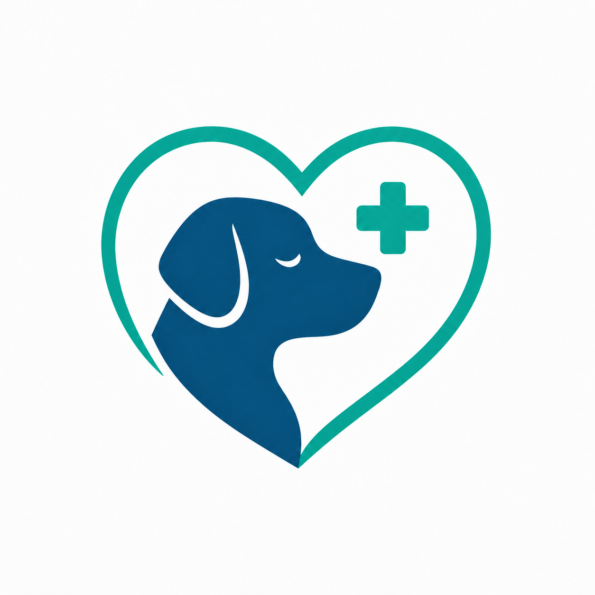
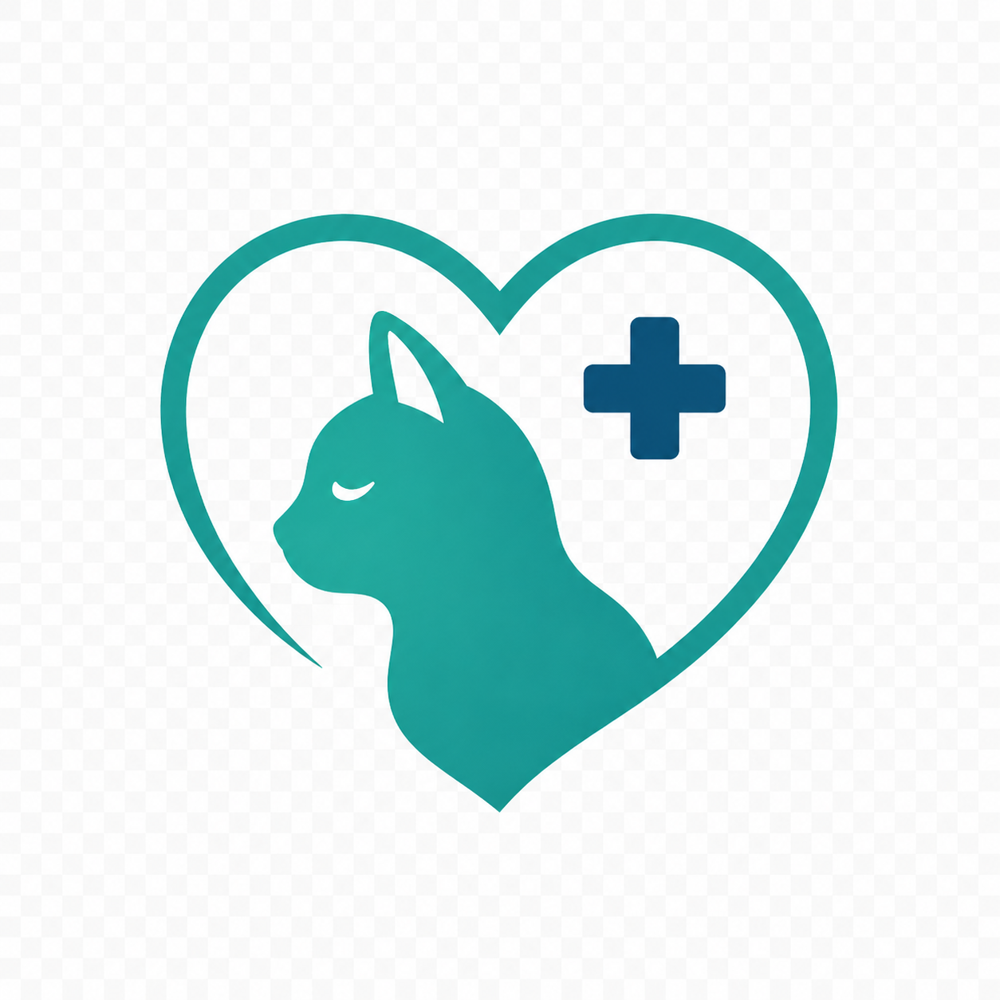

Vetora / ambulanta workspace
Jedan ekran za ritam cijele veterinarske ambulante.
Vetora povezuje dnevnik rada, vlasnike, ljubimce, termine i liječnike u sučelje koje izgleda kao alat za ozbiljan operativni rad, a ne kao još jedna tablica.
platform.core
Designed for busy clinics
Platforma
Ambulanta kao workspace, ne kao papirnati proces.
Vetora je zamišljena kao operativni sloj za veterinarski tim: brzo dodavanje podataka, pregledna navigacija, jasni statusi i modularna struktura za širenje sustava.
Vlasnici
Kontakt, email, adresa i veza s ljubimcima bez lutanja kroz dokumente.
Ljubimci
Vrsta, pasmina, datum rođenja, mikročip i napomene.
Termini
Dnevni raspored, razlog dolaska i status posjeta.
Liječnici
Profili tima, specijalizacije i vizualna identifikacija.
Zalihe, izvještaji, računi i kartoni
Landing prikazuje MVP, ali struktura aplikacije je spremna za ozbiljnije poslovne module.
Tok rada
Od ulaska pacijenta do zakazanog termina u četiri poteza.
Unesi osnovne kontakt podatke i pripremi profil.
Dodaj vrstu, pasminu, mikročip i napomene.
Odredi vrijeme, razlog dolaska i status.
Tim vidi današnji operativni ritam na početnoj ploči.

Pas
Mačka+Egzotične životinje, ptice, gmazovi i mali sisavci
Demo request
Želiš prezentirati Vetoru kao ozbiljan proizvod?
Ovaj landing page je statički, Docker-ready i spreman za daljnje povezivanje s pravom kontakt formom.